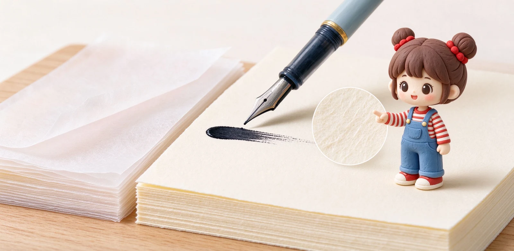

語意摘要：鋼筆下墨多，紙張要能接住墨又不讓它亂跑。巴川紙 Tomoe River 以 52g 超薄卻抗暈聞名，原廠巴川製紙所 2021 年停產後，由石川縣金澤的三善（Sanzen）接手重生；MD 用紙為 80g 奶油色厚紙，阻尼適中、正反面都乾淨。前者適合追求輕盈與彩墨表現，後者適合日常鋼筆筆記。
為什麼鋼筆需要專門的紙？
鋼筆是靠筆尖把墨水帶到紙上，一筆下去的墨量比中性筆多很多。一般辦公室影印紙或校園筆記本紙，表面沒處理過，墨水一下去就沿著纖維毛細孔往外爬，字跡邊緣毛毛的，這就是暈墨。
鋼筆專用紙會在紙漿與表面加工上下功夫，讓墨水停在該停的地方：正面不暈、不挑筆尖、彩墨的 shading 與 sheen 也表現得出來。這就是為什麼同樣一支筆，換對紙寫起來像換了一支筆。
巴川紙 Tomoe River：超薄傳說與它的停產風波
巴川紙 Tomoe River 由日本巴川製紙所（巴川コーポレーション）生產，克重只有 52g，薄到對光幾乎透光，卻奇蹟似地抗暈墨、彩墨表現極華麗，是全球鋼筆玩家的傳說級用紙。它薄到一本好幾百頁還是輕，這正是它迷人的地方。
但故事在 2019 年轉折：原廠宣布製造巴川紙的七號抄紙機要停機，一度改由九號機生產；2021 年九號機也要停。巴川公司在 2021 年 10 月宣布，將於 11 月 28 日停止 Tomoe River 系列的製造與銷售，全球玩家陷入搶購舊紙的恐慌。

新版巴川紙：三善 Sanzen 接手後變了什麼
好消息是這張紙沒有真的消失。2021 年之後，位於石川縣金澤市、從 1976 年就做 52g 筆記本紙的三善製紙（Sanzen）接手，以自家技術重新調整配方，用闊葉樹（尤加利）與針葉樹（松）紙漿混抄，重生了新版 Tomoe River。
玩家普遍回報：新版比舊版略白一點、略厚一點，滑順度接近，鋼筆適性依然出色；舊版玩家不捨的，其實是對那張傳奇紙的情懷。現在市面上的巴川紙筆記本，絕大多數已經是三善版本，價格也比舊版搶購潮時回穩。
MD 用紙：厚實奶油派的日常首選
Midori 的 MD 用紙是另一條路線：克重約 80g，紙色偏奶油米白、不刺眼，表面有一點纖維感與阻尼，鋼筆寫起來不會滑到抓不住，又不至於刮紙。它正面不暈、背面也幾乎不透，日常筆記的整潔度很高。
MD 用紙 A5 版有 176 頁，整本約 260 克上下，厚度與重量平衡得剛好。它不像巴川紙那樣把彩墨表現放大到極致，但胜在穩定、耐寫、每天用不會有壓力。
| 項目 | 巴川紙 Tomoe River | MD 用紙 |
|---|---|---|
| 克重 | 52g（超薄） | 約 80g（厚實） |
| 紙色 | 白 | 奶油米白 |
| 鋼筆抗暈 | 極佳 | 佳 |
| 背面透頁 | 會透（薄紙特性） | 幾乎不透 |
| 手感 | 極滑、極輕 | 略阻尼、扎實 |
| 適合 | 彩墨表現、手帳書寫 | 日常鋼筆筆記、長期使用 |
怎麼開始選？給鋼筆新手的建議
- 先問自己：要輕盈彩墨，還是要整潔好整理。
- 喜歡輕薄、能接受背面透字 → 入手巴川紙筆記本（現為三善新版）。
- 想要正反面都乾淨、每天穩定寫 → 選 MD 用紙或同級 80g 厚紙。
- 不確定就先買少量散裝紙試寫，用自己常帶的鋼筆與墨測過再買整本。
- 記得墊一張墊板：再厚的紙，下面是桌子凹槽還是會影響手感。
常見問題 FAQ
巴川紙為什麼說停產了，現在還買得到嗎？
巴川紙 52g 這麼薄，鋼筆寫背面會不會看得到字？
MD 用紙到底是幾克重？
鋼筆紙一定要很貴嗎？
一般筆記本為什麼鋼筆寫起來會暈？
資料來源與核實依據
- Announcement of the transfer of Tomoe River paper products（2021/10/28 停產公告）（TOMOEGAWA 巴川コーポレーション）
- New Tomoe River Paper by Sanzen（三善接手、尤加利與松紙漿配方）（Business Pens X）
- Why Tomoe River Paper Is The #1 Fountain Pen Paper（Sanzen 2021–現況、2024/2025 改版）（Galen Leather）
- MD PAPER 80g/m²、A5 176 頁（IRO / MIDORI）
相關文章推薦

紙張克重 GSM 是什麼？52g 到 100g 書寫手感與透頁完整解析
GSM 是「每平方公尺紙重」，數字越大紙通常越厚越扎實；但 52g 的巴川紙反而鋼筆不暈，因為它做過特殊加工，克重不是唯一答案。

MD 筆記本為何經典？Midori 系列、奶油用紙與鋼筆適性解析
MD 筆記本勝在一個「穩」字：80g 奶油色 MD 用紙、穿線裝訂能完全平攤，鋼筆好寫又不張揚，難怪做了十年還是經典。

ほぼ日手帳 Hobonichi 為何紅？巴川紙、一日一頁與選購眉角
ほぼ日手帳的紅，來自「超薄巴川紙＋一日一頁」的單純：A6 本體約新台幣六百多元起、A5 Cousin 本體約一千多元，書套另購。